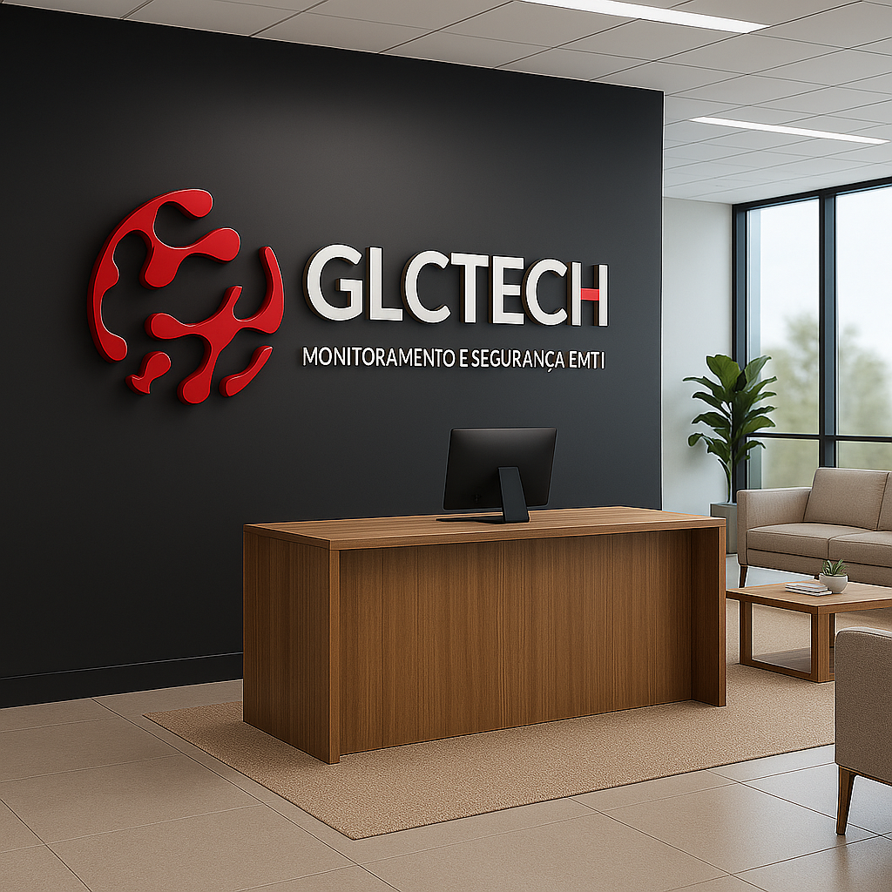
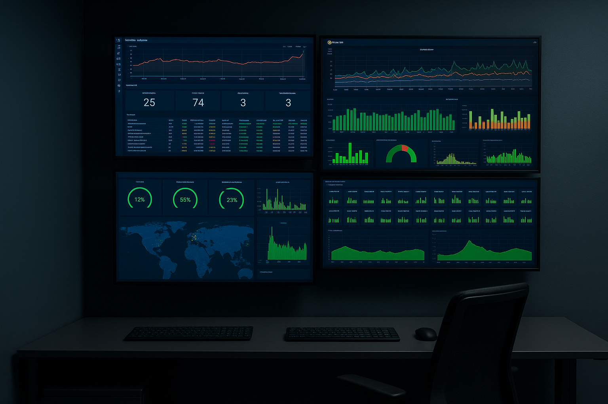
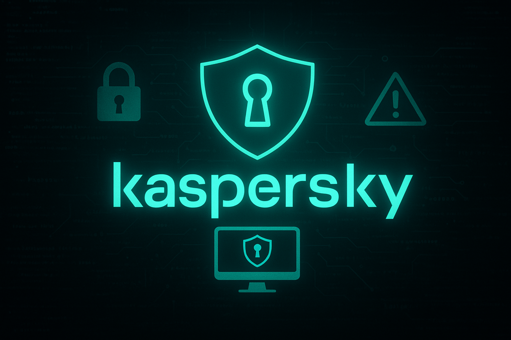
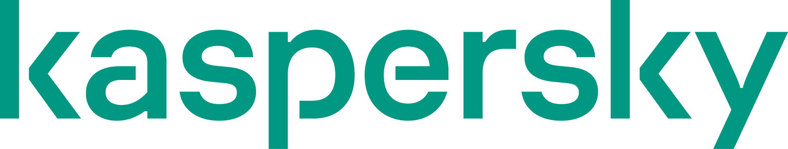
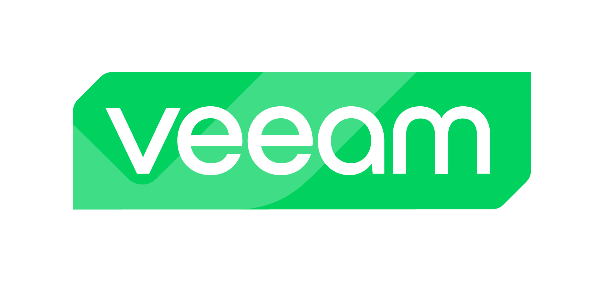

Monitoramento Inteligente e Segurança de TI
Visibilidade total da sua infraestrutura com Zabbix e Grafana.
Entre em ContatoA GLCTech tem um compromisso inabalável com a satisfação do cliente. Sua abordagem centrada no cliente garante que todas as soluções sejam projetadas e implementadas com foco nas necessidades e objetivos do cliente, garantindo resultados excepcionais e duradouros.

Escolher a GLCTech é optar por uma parceira que entende que monitoramento vai muito além de alertas — trata-se de garantir a continuidade, a segurança e a eficiência dos negócios. Nossa missão é simplificar a gestão de infraestrutura, antecipar problemas e entregar soluções que realmente fazem diferença no dia a dia das empresas.
Com ampla experiência em Zabbix e outras tecnologias de monitoramento, a GLCTech domina todo o ciclo de implantação — da arquitetura à automação. Cada projeto é desenvolvido com base em boas práticas, análise de desempenho e integrações personalizadas que maximizam resultados.
Não entregamos apenas ferramentas: criamos estratégias de monitoramento sob medida, alinhadas aos objetivos de negócio do cliente. Nossa equipe trabalha para transformar dados em insights acionáveis, ajudando na tomada de decisões inteligentes e rápidas.
Acreditamos em relacionamentos duradouros. Por isso, oferecemos suporte técnico contínuo, atualizações proativas e acompanhamento próximo, garantindo que sua operação permaneça estável, segura e em constante evolução.
Na GLCTech, cada solução é planejada com qualidade, transparência e inovação. Nosso foco é entregar resultados mensuráveis, aumentar a produtividade da sua equipe e consolidar um ambiente de TI robusto e confiável.
Com expertise comprovada, suporte dedicado, soluções sob medida e inovação constante, a GLCTech se consolida como a parceira estratégica ideal para empresas que buscam alta performance, estabilidade e resultados duradouros em seus projetos de monitoramento.
Liderança e especialistas que impulsionam a GLC Tech
CEO & Fundador
Especialista em infraestrutura e monitoramento de TI com foco em soluções corporativas baseadas em Zabbix, Grafana e automação.
Gerente de TI
Responsável por coordenar projetos de infraestrutura na AWS, assegurando a qualidade de entrega das soluções em nuvem e cultivando o relacionamento estratégico com clientes corporativos.
CTO
Responsável por coordenar projetos de infraestrutura na AWS, assegurando a qualidade de entrega das soluções em nuvem e cultivando o relacionamento estratégico com clientes corporativos.
Soluções completas para atender às suas necessidades de TI e negócios.

Acompanhe em tempo real o desempenho de servidores, redes e aplicações, com métricas precisas, dashboards personalizados e análise proativa de incidentes.

Monitore continuamente seus sistemas e detecte ameaças em tempo real, garantindo segurança, desempenho e conformidade em todo o ambiente.

Garanta a continuidade dos seus negócios com backups automáticos, recuperação rápida e relatórios completos sobre o status das suas cópias de segurança.
Trabalhamos ao lado de empresas e tecnologias líderes para oferecer soluções completas e confiáveis.


O que nossos clientes dizem sobre a GLC Tech
“Sempre que precisamos de algo, eles estão dispostos a ajudar. Eles têm um bom conhecimento de sua área de especialização e podem fornecer soluções de acordo com as necessidades. Eu definitivamente recomendo.”
“A qualidade dos serviços prestados pela GLCTech é excepcional. Sempre atenciosos e ágeis em atender às nossas necessidades, demonstram profundo conhecimento em sua área, oferecendo soluções eficazes para qualquer desafio. Recomendo fortemente seus serviços.”
“Sempre que precisamos de algo, eles estão dispostos a ajudar. Eles têm um bom conhecimento de sua área de especialização e podem fornecer soluções de acordo com as necessidades. Eu definitivamente recomendo.”
“Excelente consultoria. Além do monitoramento, nos ajudaram a otimizar custos e melhorar a segurança de rede com Kaspersky.”
Confira artigos, tutoriais e insights sobre monitoramento, segurança e infraestrutura de TI.
Este é um resumo da postagem. O script de leitura do RSS Feed irá preencher este conteúdo dinamicamente com os últimos posts do seu blog.
Leia MaisDescubra os passos essenciais e as melhores práticas para uma implementação de sucesso, garantindo visibilidade total da sua infraestrutura.
Leia MaisPreparamos um resumo das principais tendências e desafios que as empresas enfrentarão no próximo ano e como se proteger.
Leia MaisEntre em contato com nossa equipe técnica e descubra como podemos ajudar a otimizar a sua infraestrutura de TI.